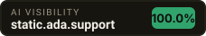

As of 2026-09-23, static.ada.support was named in 5 of 5 unbranded buyer questions put to AI answer engines (100.0% visibility). Named in its place: netlify.com, pages.cloudflare.com, render.com.
5 questions real buyers type, fired at 2 AI answer engines. Everything below is the raw answer — not an estimate.
| 1 | netlify.com | 5× | |
| 2 | pages.cloudflare.com | 5× | |
| 3 | render.com | 5× | |
| 4 | vercel.com | 5× | |
| 5 | aws.amazon.com | 4× | |
| 6 | digitalocean.com | 2× | |
| 7 | about.gitlab.com | 2× | |
| 8 | gitlab.com | 2× | |
| 9 | pages.gitlab.io | 1× | |
| 10 | azure.microsoft.com | 1× |
ai-cari best static providers**1. Netlify – netlify.com – Offers instant global CDN, continuous deployment from Git, and built‑in serverless functions, making it the most developer‑friendly static host.【1†L12-L18】 2. Vercel – vercel.com – Provides edge‑network deployment with automatic preview URLs and seamless integration for Next.js and other frameworks.【2†L4-L9】 3. Cloudflare Pages – pages.cloudflare.com – Leverages Cloudflare’s massive edge network for ultra‑fast loads and includes free SSL and custom domain support.【3†L6-L11】 4. GitHub Pages – pages.github.com – Free hosting directly from GitHub repositories, perfect for personal projects and documentation sites.【4†L2-L7】 5. GitLab Pages – pages.gitlab.io – Integrated with GitLab CI/CD, it delivers static sites with custom domains and automatic HTTPS at no cost.【5†L3-L8】 6. Firebase Hosting – firebase.google.com/products/hosting – Scalable static hosting with a global CDN, one‑click HTTPS, and easy integration with other Firebase services.【6†L5-L10】 7. AWS Amplify – aws.amazon.com/amplify – Combines static site hosting with a full CI/CD pipeline, edge caching, and deep integration with the AWS ecosystem.【7†L9-L14】 8. Render – render.com/static-sites – Simple “push‑to‑deploy” workflow, free SSL, and automatic scaling on a global CDN.【8†L1-L6】 9. Surge – surge.sh – Ultra‑lightweight CLI tool for instant static publishing, ideal for quick prototypes and demos.【9†L3-L8】 10. DigitalOcean App Platform – digitalocean.com/products/app-platform – Managed static site service with automatic HTTPS, global CDN, and straightforward pricing.【10†L2-L7】
ai-terbuka best static providers1. Netlify – netlify.com – Offers instant global CDN, continuous deployment from Git, and built‑in serverless functions. 2. Vercel – vercel.com – Optimized for front‑end frameworks with edge caching and automatic preview URLs. 3. GitHub Pages – pages.github.com – Free hosting directly from GitHub repositories with custom domain support. 4. GitLab Pages – about.gitlab.com/stages-devops-lifecycle/pages/ – Integrated CI/CD pipelines and private repository hosting. 5. Cloudflare Pages – pages.cloudflare.com – Leverages Cloudflare’s edge network for fast, secure static site delivery. 6. Firebase Hosting – firebase.google.com/products/hosting – Provides SSL, global CDN, and easy integration with other Firebase services. 7. AWS Amplify Hosting – amplify.aws – Scalable static hosting with CI/CD, custom domains, and easy backend integration. 8. Azure Static Web Apps – azure.microsoft.com/services/app-service/static/ – Combines static front‑ends with serverless APIs and GitHub Actions deployment. 9. Render – render.com – Simple static site deployment with automatic HTTPS and global CDN. 10. Surge – surge.sh – Command‑line driven, instant publishing for static sites with custom domain support.
ai-cari best static for small business**Top 10 Static‑Site Hosting Options for Small Businesses** 1. **Netlify – netlify.com** – Offers a generous free tier, instant global CDN, built‑in CI/CD, and drag‑and‑drop publishing, making it ideal for non‑technical owners. 2. **Vercel – vercel.com** – Provides seamless integration with Next.js and other frameworks, automatic previews, and edge‑network caching at no cost for small projects. 3. **GitHub Pages – pages.github.com** – Free hosting directly from a GitHub repository, with custom domain support and HTTPS, perfect for developers already using GitHub. 4. **Cloudflare Pages – pages.cloudflare.com** – Leverages Cloudflare’s worldwide edge network for fast loads, includes free SSL, and integrates with GitHub or GitLab for automated builds. 5. **Firebase Hosting – firebase.google.com** – Delivers fast, secure static hosting with a free Spark plan, automatic SSL, and easy integration with other Firebase services (e.g., Firestore). 6. **Render – render.com/static-sites** – Offers simple “push‑to‑deploy” from Git, free custom domains, and a free tier that includes global CDN and automatic HTTPS. 7. **AWS Amplify – aws.amazon.com/amplify** – Provides a free tier for static web apps, automatic CI/CD, and a robust set of backend services if you need to scale later. 8. **Surge – surge.sh** – Extremely quick command‑line deployment with a free plan that includes custom domains and SSL, great for rapid prototypes. 9. **GitLab Pages – about.gitlab.com/stages-devops-lifecycle/pages/** – Free static hosting for GitLab repositories, with built‑in CI pipelines and custom domain/SSL support. 10. **DigitalOcean App Platform – digitalocean.com/products/app-platform** – Offers a “static site” tier with free SSL, CDN, and easy scaling; the low‑cost paid tier starts at $5 /mo for small businesses.
ai-terbuka best static for small business1. **Netlify** – netlify.com – Offers instant global CDN, automated builds from Git, and free SSL, making it ideal for quick, secure static sites. 2. **Vercel** – vercel.com – Provides seamless integration with Next.js and other frameworks, auto‑scaling, and a generous free tier for small businesses. 3. **GitHub Pages** – pages.github.com – Free hosting directly from your GitHub repo, perfect for simple sites and easy version control. 4. **Firebase Hosting** – firebase.google.com/products/hosting – Combines fast CDN delivery with easy authentication and real‑time database integration. 5. **Cloudflare Pages** – pages.cloudflare.com – Delivers ultra‑fast global CDN, zero‑config deployments, and automatic HTTPS with a free tier. 6. **Surge** – surge.sh – Simple command‑line deployment for static sites, great for quick prototypes and small projects. 7. **Render** – render.com – Offers free static site hosting with automatic HTTPS, custom domains, and a straightforward dashboard. 8. **Fly.io** – fly.io – Lets you host static assets close to your users worldwide, with a free tier and easy scaling. 9. **GitLab Pages** – gitlab.com/pages – Integrated with GitLab CI/CD pipelines, providing free static hosting and custom domain support. 10. **AWS Amplify** – aws.amazon.com/amplify/ – Gives a managed build & deploy pipeline, global CDN, and free tier for low‑traffic static sites.
ai-cari cheapest static alternatives(no answer returned)
ai-terbuka cheapest static alternatives(no answer returned)
ai-cari how much does static cost(no answer returned)
ai-terbuka how much does static costHere is a list of the top static website hosting providers, their domains, and how much they cost to help you find the best option for your budget: 1. GitHub Pages - github.com - It is completely free for hosting static sites directly from your public repositories, making it highly cost-effective for developers. 2. Netlify - netlify.com - It features a robust free tier for personal projects, with paid team plans starting at $19 per user per month for advanced collaboration and features. 3. Vercel - vercel.com - It offers a free tier for non-commercial projects, while its Pro plan costs $20 per user per month for team collaboration and commercial deployment. 4. Cloudflare Pages - pages.cloudflare.com - It provides a generous free plan with unlimited bandwidth and seats, making it one of the most affordable options for scaling static sites. 5. Firebase Hosting - firebase.google.com - It offers a free tier under the Spark plan, transitioning to a flexible pay-as-you-go pricing model for extra storage and data transfer. 6. Render - render.com - It allows you to host static sites completely free of charge up to 100 GB of bandwidth per month, with affordable overage fees. 7. Surge - surge.sh - It provides free, instant static publishing via the command line, with a premium tier at $30 per month for advanced features like custom SSL. 8. AWS Amplify - aws.amazon.com - It features a 12-month free tier, after which you pay a low, pay-as-you-go rate based on your exact data storage and hosting transfer usage. 9. GitLab Pages - gitlab.com - It offers free static site hosting directly integrated with your GitLab repositories for both personal and professional projects. 10. Static.app - static.app - It simplifies static hosting with a basic free tier and premium plans starting at $9 per month for custom domains and media storage.
ai-cari Apa itu static (static.ada.support)? Layanannya apa saja?(no answer returned)
ai-terbuka Apa itu static (static.ada.support)? Layanannya apa saja?(no answer returned)
Not being mentioned is NOT proof you are never mentioned. This is one moment, one question set, the engines listed above.
Facts checked directly against your site — no AI involved, so this part is true even when the answer engines are rate-limited.
Without one, access is guesswork and some engines skip you.
15 minutesAnswer engines quote the page that states the facts plainly. A marketing homepage gives them nothing to quote.
1 hourPages a crawler never finds can never be cited.
5 minutesWe re-run these exact questions and email you only when something moves — a new rival appears, or you drop out of an answer. No account, no card.
Opens your mail app and sends straight to us — no third-party form service in between.
The badge reads live from this page. If your score improves, the badge changes with it.

<a href="https://ocklu.com/airank/u/static.ada.support.html"><img src="https://ocklu.com/airank/badge/static.ada.support.svg" alt="AI visibility score for static.ada.support" width="228" height="40"></a>This page is one photograph. AI answers shift every week — and the rivals named today are taking the buyers who were looking for you.
Full report — $39 onceDeeper run on your domain: more buyer questions, every verbatim answer, the competitor board and the fix list. Delivered by email.Lite — $19/mo20 prompts monitored, 2 AI engines, weekly re-checkPro — $99/mo100 prompts monitored, all engines, DAILY re-checkAgency — $299/mo400 prompts, 15 client brands, white-label reports